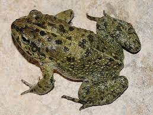
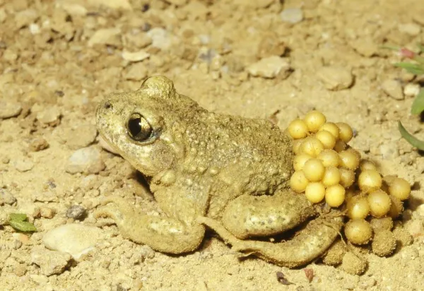
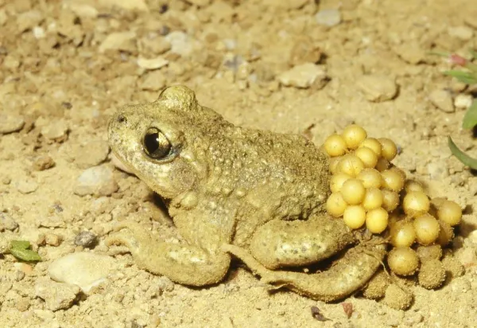

Top 10 espécies de sapos
Selecionei as melhores e mais diversas espécies de sapos
Sapo-árabe (Sclerophrys arabica)
Tudo sobre essa espécie

Sapo-verde-de-Baloch (Bufotes zugmayeri)
Tudo sobre a espécie
Sapo-de-barriga-de-fogo-oriental (Bombina orientalis)
Tudo sobre essa espécie
Sapo-cururu (Rhinella marina)
Tudo sobre essa espécie
.jpeg) Sapo-parteiro-comum (Alytes maurus ou Alytes obstetricans)
Tudo sobre essa espécie

Sapo-cururu (Rhinella marina)
Tudo sobre essa espécie
Sapo-parteiro-comum (Alytes maurus ou Alytes obstetricans)
Tudo sobre essa espécie

Sapo-cururu (Rhinella marina)
Tudo sobre essa espécie
PARA VER TODOS OS ARQUIVOS
Acesse o GitHub para pegar os exemplos feitos
PARA BAIXAR ESSE CONTEUDO EM PDF
Baixe aqui seu PDF dos principais comandos.
PARA PUBLICAR O SITE
Rotinas para publicar o site.